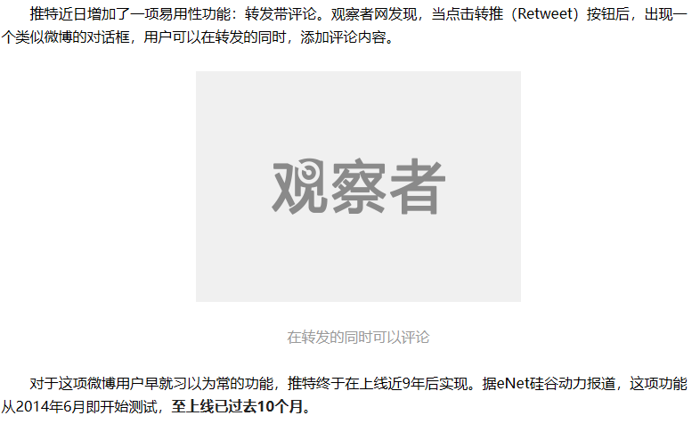

Τειρεσίας✝️
@Robert_Bumaro11
@rong8338 原来如此，我纯网络原始人最近几年才用上微博和推特（）不过搜了下【rt@原作者原文】似乎算单独发另外一条贴文，那楼中楼形式的评论区是微博比推特先出现吗（？）

海鹽綿綿冰 ☁️
@rong8338
@Robert_Bumaro11 沒有引用之前，甚至沒有轉發和回覆之前，是用「評論/回覆 RT @原作者 原文」這種形式出現的，後來有了轉推和回覆，但是這種評論轉發的形式/習慣還是在第三方客戶端裡面留了下來。後來api收費沒有第三方客戶端了，也有了引用這個功能，就很少見到了（